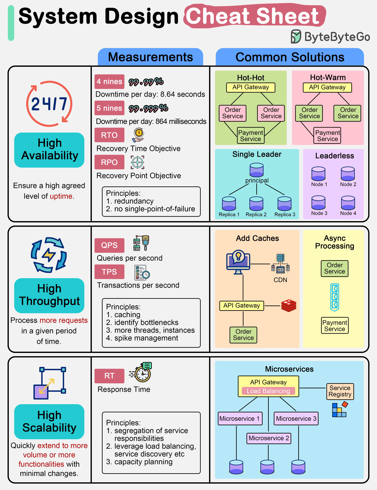

We are often asked to design for high availability, high scalability, and high throughput. What do they mean exactly?
The diagram below is a system design cheat sheet with common solutions.
This means we need to ensure a high agreed level of uptime. We often describe the design target as “3 nines” or “4 nines”. “4 nines”, 99.99% uptime, means the service can only be down 8.64 seconds per day.
To achieve high availability, we need to design redundancy in the system. There are several ways to do this:
This means the service needs to handle a high number of requests given a period of time. Commonly used metrics are QPS (query per second) or TPS (transaction per second).
To achieve high throughput, we often add caches to the architecture so that the request can return without hitting slower I/O devices like databases or disks. We can also increase the number of threads for computation-intensive tasks. However, adding too many threads can deteriorate the performance. We then need to identify the bottlenecks in the system and increase its throughput. Using asynchronous processing can often effectively isolate heavy-lifting components.
This means a system can quickly and easily extend to accommodate more volume (horizontal scalability) or more functionalities (vertical scalability). Normally we watch the response time to decide if we need to scale the system.